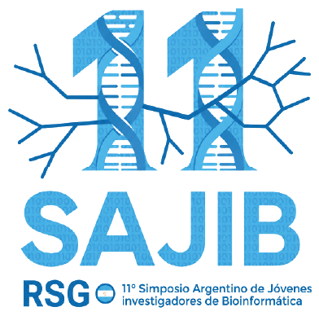
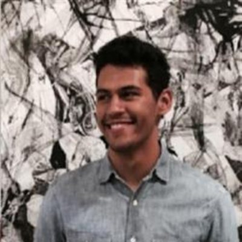
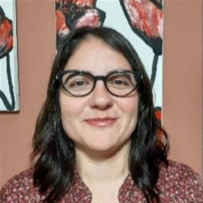
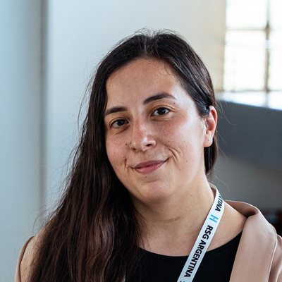
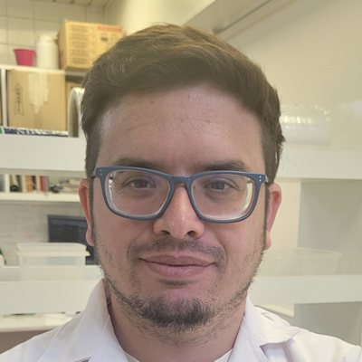
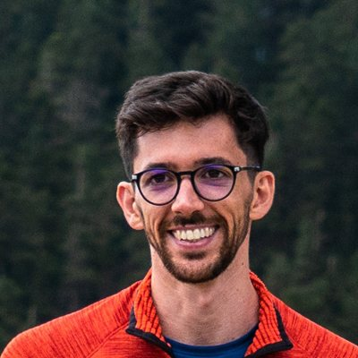
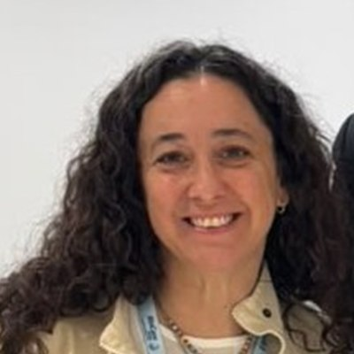
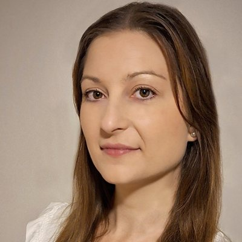
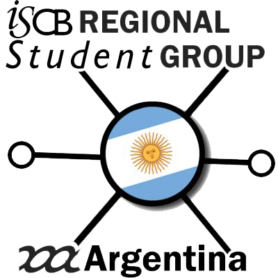

11° Simposio Argentino de Jóvenes Investigadores en Bioinformática, organizado por RSG Argentina.

Todas las fechas son de 2026.
Dos días: talleres el 29 de octubre y el simposio el 30, en la UNNOBA. Vamos a ir sumando las actividades a medida que se confirmen.


Franco Cuccovia — Becario doctoral CONICET, Universidad Nacional de Quilmes
Carolina Cerrudo — Investigadora adjunta, Universidad Nacional de Quilmes
Un taller práctico sobre el análisis de datos de secuenciación de lecturas cortas (NGS), usando Galaxy, una plataforma en la nube que no requiere instalar software ni gran capacidad de cómputo. A partir de un conjunto reducido de datos se evaluará la calidad de las lecturas y se hará el trimming, para luego ensamblar de novo explorando el efecto de distintos parámetros y evaluando el resultado con distintas herramientas. Por último, se hará la identificación taxonómica y la anotación génica del ensamblado para caracterizar el proteoma predicho, explorando dominios y posibles funciones proteicas, y se discutirán herramientas y estrategias alternativas según los objetivos del análisis.

Andrea Peñas Ballesteros — Lic. en Genética y Mg. en Bioinformática y Biología de Sistemas, CITNOBA-UNNOBA
Nicolás Lavatti — Lic. en Genética, UNNOBA / Trebe Biotech
Una introducción a la programación en R y su aplicación al análisis y visualización de datos biológicos. Se recorrerán conceptos básicos como variables, tipos de datos, funciones y manejo de errores, para luego explorar y visualizar datos con ggplot2, incorporando buenas prácticas de diseño gráfico y estadístico y analizando errores y trampas visuales frecuentes en la comunicación de resultados.


Matías Mac Allister — Becario posdoctoral, CeBio, CITNOBA (UNNOBA-UNSADA-CONICET)
Diego Peralta — Investigador posdoctoral, Laboratorio de Evolución, Facultad de Ciencias, Universidad de la República
La genómica de poblaciones transformó nuestra capacidad para comprender la historia evolutiva y demográfica y analizar la conectividad genética y la estructura poblacional. Este taller conecta los fundamentos teóricos de la disciplina, apoyados en casos de estudio reales, con las herramientas bioinformáticas necesarias para un estudio genómico. En la parte práctica se trabajará con datos de secuenciación masiva (RAD-seq): desde el control de calidad y la limpieza de secuencias crudas, pasando por el llamado y filtrado de SNPs, hasta la ejecución e interpretación de análisis poblacionales.
8:00 – 8:30
Acreditación y colgado de pósters
8:30 – 9:00
Apertura
9:00 – 9:45
Presentaciones orales de pósters
9:45 – 10:10
Coffee break
10:10 – 10:30
Mariano Belaich
10:30 – 10:50

Cintia Fabbri
Jefa del Departamento de Investigación y Diagnóstico Referencial — Instituto Nacional de Enfermedades Virales Humanas "Dr. J. I. Maiztegui" (INEVH-ANLIS)
10:50 – 11:10
Charla a confirmar
11:10 – 11:30
Preguntas a oradores/as
11:30 – 12:30
Charla estelar: Gustavo Parisi
12:30 – 13:30
Almuerzo
13:30 – 15:00
Sesión de pósters
15:00 – 15:20

Ileana Tossolini
Investigadora asistente (CONICET) y profesora titular (FI-UNER) — Instituto de Investigación y Desarrollo en Bioingeniería y Bioinformática (IBB, CONICET-UNER)
15:20 – 15:40
Charla a confirmar
15:40 – 16:00
Charla a confirmar
16:00 – 16:20
Preguntas a oradores/as
16:20 – 16:40
Coffee break
16:40 – 17:10
Presentaciones orales de pósters
17:10 – 18:10
Mesa redonda: Ciencia desde la trinchera
18:10 – 18:30
Palabras finales y premios
Organizan
